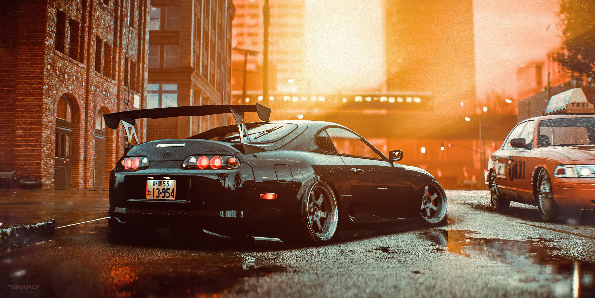

los reyes del JDM
Toyota Supra
En sus comienzos, el Supra derivaba del Toyota Celica, aunque ligeramente más largo y amplio. A partir de mediados de 1986, la tercera generación del Supra pasó a ser un modelo propio. El Supra también tiene sus raíces en el Toyota 2000GT, siendo el motor su principal ejemplo. Las tres primeras generaciones se ofrecieron con un descendiente directo a la M 2000GT del motor. Las cinco generaciones del Supra tienen un motor de seis cilindros en línea. Junto con este nombre y el automóvil, Toyota creó el logotipo propio del Supra, derivado del logo original del Celica, siendo de color azul en lugar de naranja. Este logo fue utilizado hasta enero de 2004, cuando la tercera generación del Supra fue presentada. El nuevo logotipo fue similar en tamaño, de color naranja con la escritura sobre un fondo rojo, pero sin el diseño de barco vikingo. A su vez, lo utilizaron hasta 1989, cuando Toyota lo rediseño cambiado a su actual logotipo oval de la empresa. Este modelo se dejó de comercializar en los Estados Unidos en 1999; y en Japón en 2005.